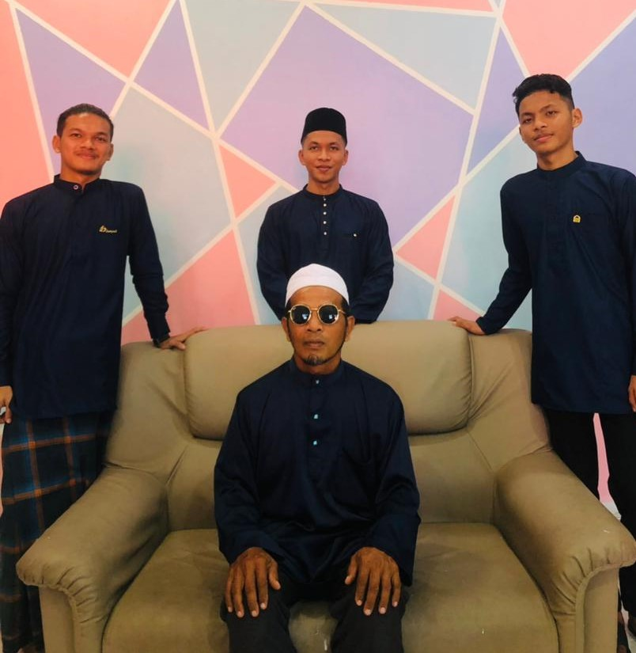
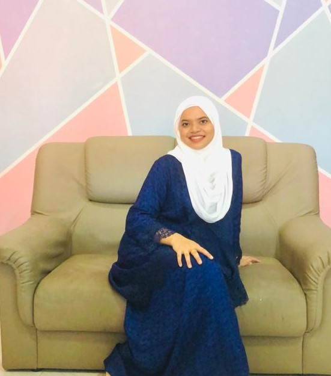
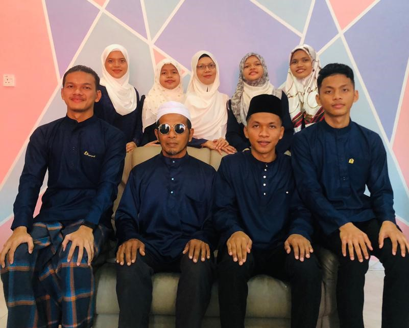
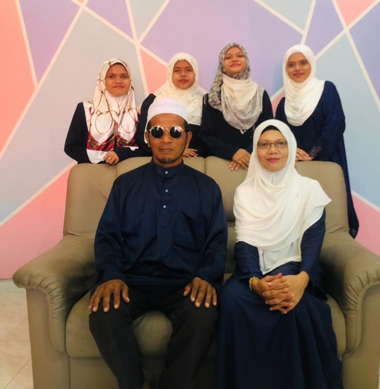
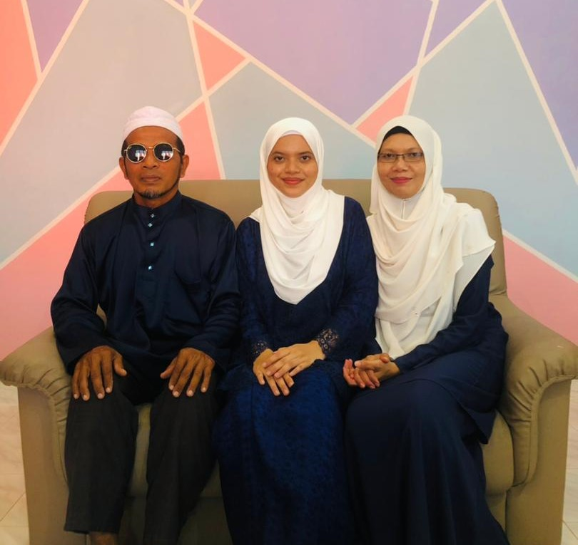
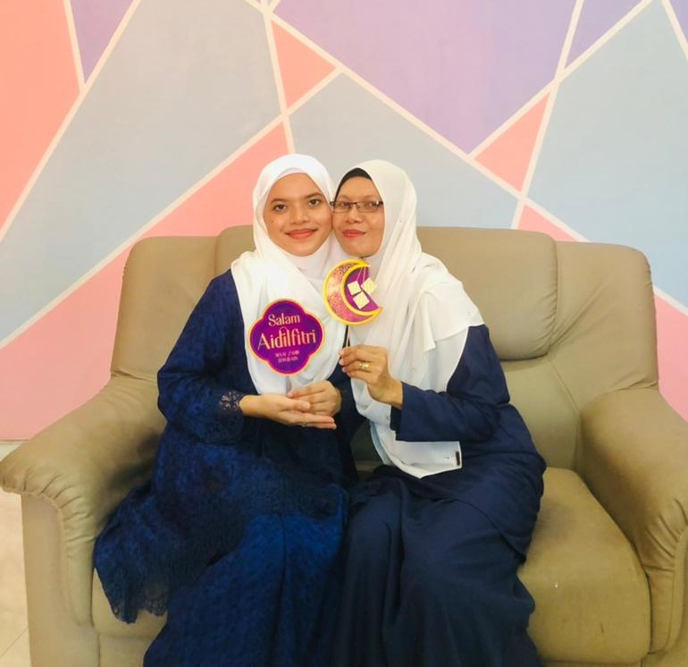
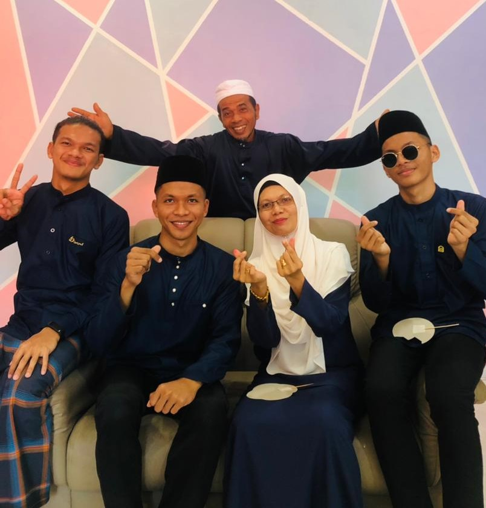
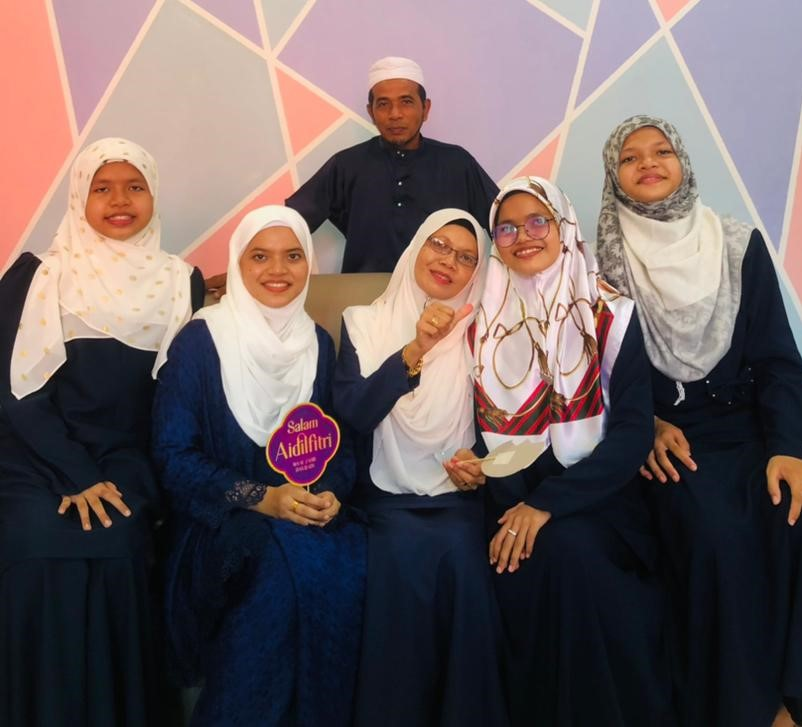

A little introduction about me :)
My name is Nur Halwa Hanis Binti Mahadi and i am 22 years old . I was born in Kampung Apal Jerteh Terengganu at 2.30 am on the date 7 August 1999
I live at Kampung Hutan Puteh Machang and i was the second child in my family . I have one brother and 2 youngest brother meanwile 4 youngest sisters. My Father work as Businessman meanwhile my mother work as a Teacher.In term of favorite colors, i like white, black and blue compare to the others because this colors give me the ' energy and boost my mood' . But when it comes to the favorite food, i love any kind of soup such as pumpkin soup , mushroom soup and more . In addition, i also like western food compared to the traditional cuisine.
My hobby is travelling, the reason why i love travel because it such as a person breaks from the dull routine, physically and mentally, i cannot find satisfaction with other activity but travelling help me to achieve this break and rejuvenates my mind and body. Unfortunately, with current situation i cannot travel and it give me more stress but nevermind i guess i need to find new hobby to keep me motivate and release my stress
Do i have any experience?
To be honest , i dont have any experience related to job . But in term of college i have some experience
When i entered in the University Teknologi Mara at 2017 , i am very interested to join academic club because i think it will make me go out from my "comfort zone" . I think ' i need to challenge myself ' . Because of that i had joined academic club represent my faculty which is Intellectual Dynamic Business Society (INDYBS)
I joined that club as Secretariat . After that i have been choseen as Exco Protokol (1) in my Academic Club. These experience is very challenging for me because i need to balance my study and club at the same time . But at the i did it ! i told myself " Every experience has their own obtacles . Dont compare your life with others because at the end you the only one who fight for your happiness"
Besides being an EXCO Protocol , i also have experienced being an emcee for a lots of programs.Usually i will be an emcee when my club has formal program.I'm also have been an emcee for programs outside my club such as MANDARIN SINGING COMPETITION
| YEAR | INSTITUTION | LEVEL |
|---|---|---|
| 2020 - NOW | BUSINESS ADMINISTRATION (HONS.) MARKETING | BACHELOR DEGREE |
| 2017-2019 | BUSINESS ADMINISTRATION AT UiTM MACHANG | DIPLOMA |
| 2012- 2016 | MAAHAD SYAMSUL MAARIF (P) PULAI CHONDONG | SPM |
|  |  |  |  |
|  |  |  |  |